程序员与屌丝 By ZhangGuojian 1月 2 2015 更新日期:1月 15 2015 一旦说起程序员，很多人就会将程序员和屌丝联想在一起。甚至有一次看新闻介绍在高考填写志愿的时候黑我大计机！当时我还对我妈解释了很长时间了。。。其实真正的程序员与你们普遍认为的程序员是有很大不同的，被程序员故意制造的假象欺骗了。就如真正的黑客的形象，与普遍大众的想法也是不同的，有兴趣额的人可以看看我转的文章什么是黑客 普通人认为程序员是这样的 工作的时候是这样的 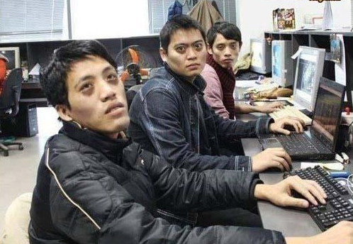 使用的键盘是这样的 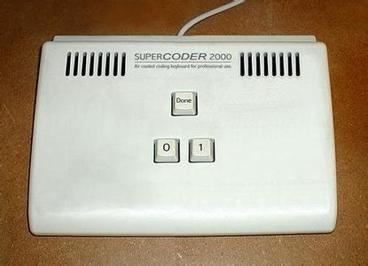 团队合作的时候时这样的 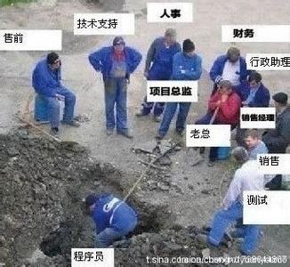 看见女生的时候 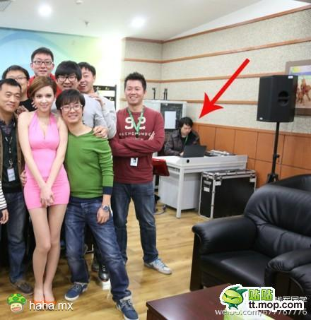 遇到改需求的问题，老板。。。 求职的时候 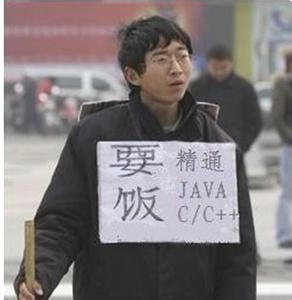 再来一发求职 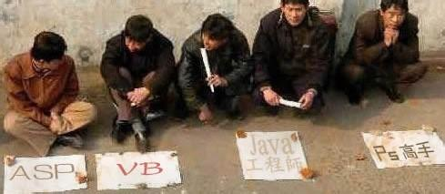 见家长后 带儿子的时候 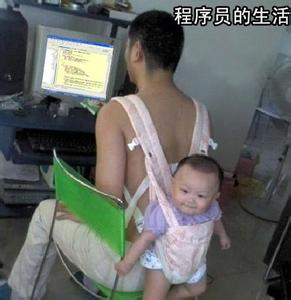 还有专门黑我大程序员的歌曲 还有视频 但真正的程序员真的是这样的吗？ 还真的不是 真正的程序员是这样的！ 为了提高工作效率而普遍使用多个显示器，所以工作的环境时这样的。 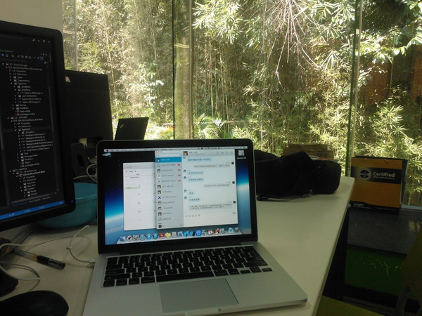 或者时这样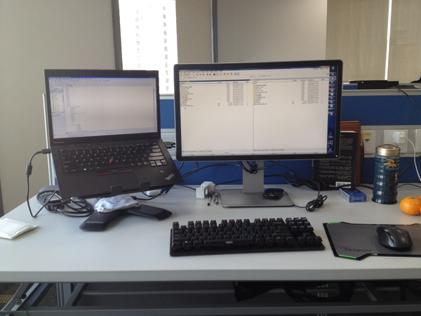 又或者是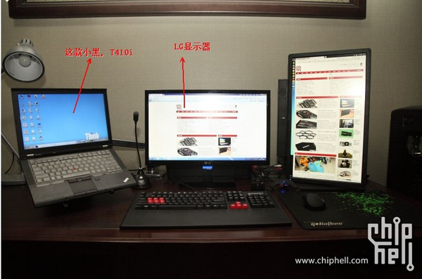 家里的环境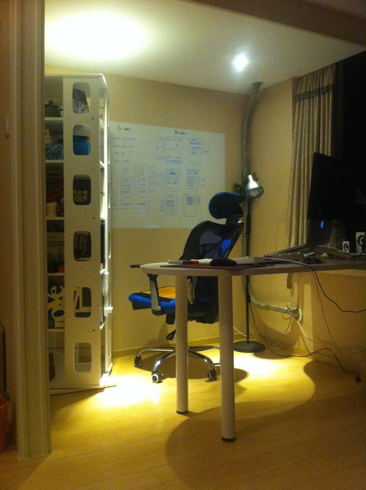 因为爱护自己的脊柱，所以用的凳子是这样的 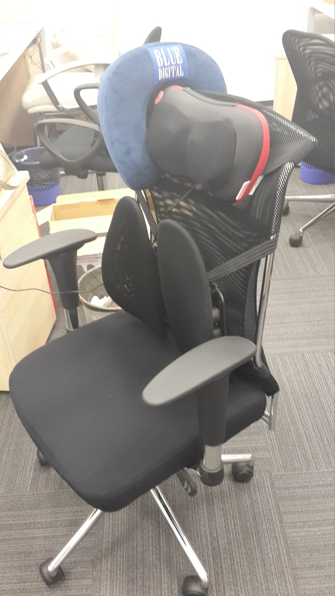 又或者是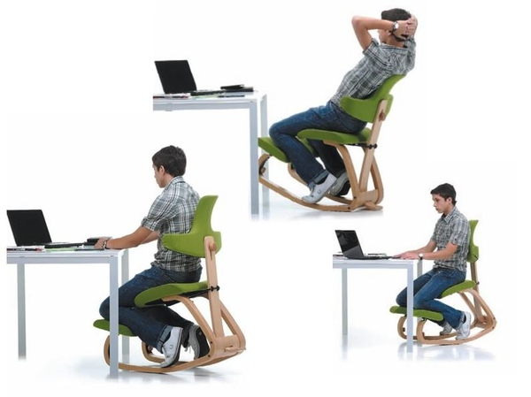 因为爱护自己的双手，所以用的键盘是这样的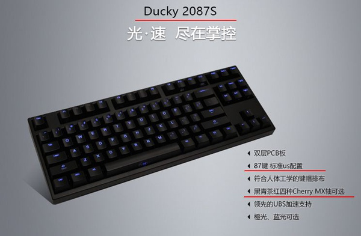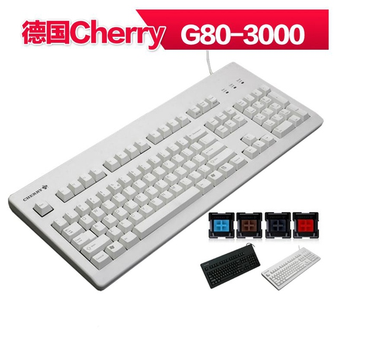 或者是，因为喜爱神之编辑器emacs而又不想弄伤宝贵的双手而选择这样的键盘 因为爱惜自己的身体，所以会定期健身，公司甚至有为程序员提供健身的设施或者是健身的补贴 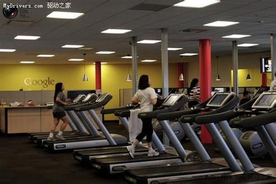 在空闲的时候，会做些有趣的事 就如：国外有一位程序员 Kurt Grandis， 家里后院常常遭受松鼠小偷，于是乎他使用Python创造了一套智能武装系统：Kinect定位 -> OpenCV识别松鼠 -> Arduino控制水枪攻击。 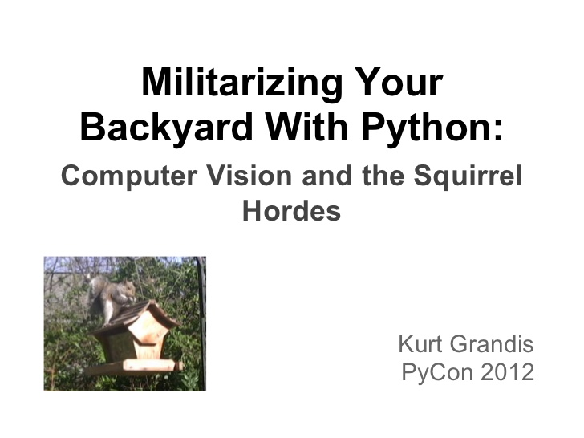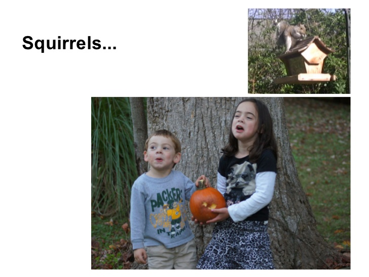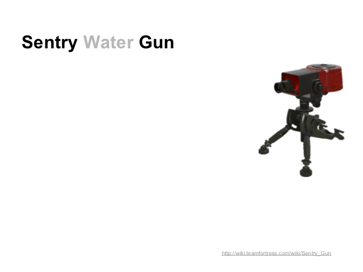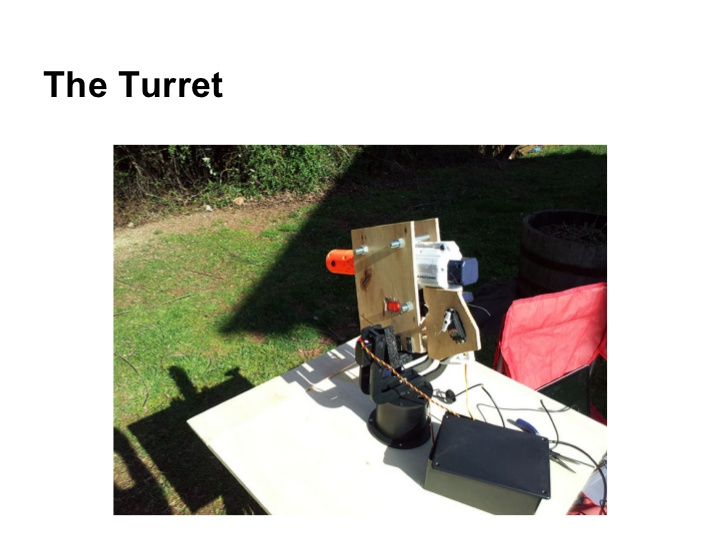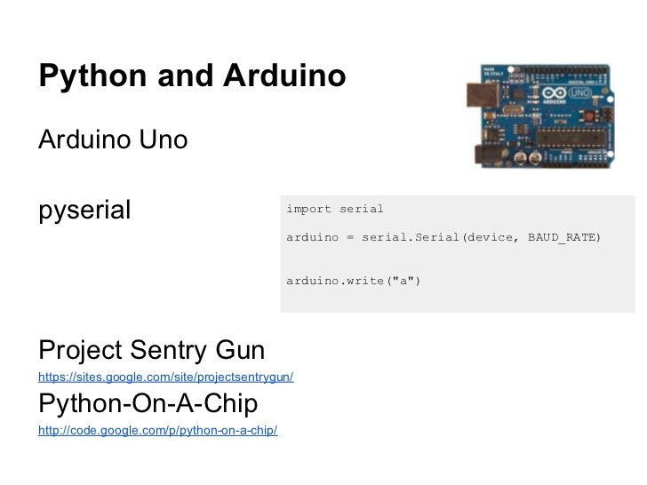 具体情况如下，不过需要翻墙 有自己的除去写代码外的兴趣爱好 攀爬 具体：云风的攀爬 乐器如：老赵的弹钢琴如：《unix编程艺术》的作者 EricS.Raymond 会吹笛子 开飞机一些有钱就任性的程序员甚至会开飞机，如：Stephen Gary Wozniak,但可能会失事（笑 1981年2月，半年前刚拿到飞机驾照的沃兹载着坎蒂，打算飞往圣地牙哥找坎蒂的舅舅帮他们设计婚戒，却在途中发生意外，他说他可能是在“没有适当风速下试图起飞”，结果飞机熄火，机翼失去爬升的力道，因此摔机了[8]。沃兹送到医院幸无大碍，清醒后呈现失忆状态，直到五个星期后才逐渐恢复记忆。 对待知识方面 程序员是少数不需要靠背景，靠人脉，不需要喝酒应酬，不需要跑业务，不需要论资排辈熬资历、努力点就能过上中产阶级生活的职业了。程序员的收入殷实且稳定，在这条路上，基本上就是技术越牛，收入越高，但是在别的行业就未必如此。基本上20多岁的小伙埋头苦干肯干，他的技术这辈子会不断提升，收入自然也就如此，跟别的行业的人还不一样，行业特殊性保证了他们永远在进取学习磨练技术。 所以程序员肯定是这么多职业中最尊重知识(包括心理学、哲学等知识)的专业之一。对待心理学方面可以看看刘未鹏的博客，他甚至出了一本关于心理学的书叫《暗时间》，书里的内容基本上就是他博客上的内容，这本书写得确实十分的好！十分值得一看。而对待哲学方面，优秀的程序员甚至可能会对哲学会有研究，原因只是就是很多自己很难想明白的事在哲学中会得到答案。 因为对知识的尊重，所以程序员常逛的地方学习氛围不会差，甚至逼格有点高，如豆瓣，知乎，quora。甚至这类的网站本来就是IT中的老大哥创业而诞生的。 因为对知识的尊重，所以程序员对儿女的学习十分关注，刘未鹏甚至会更跟幼儿园的校长谈及教学理念！ 我暂时还没听说有比程序员学习能力更快更博学的群体。 但更重要的是，他们更愿意分享知识和经验。计算机能发展如此迅猛，这些人与这样乐于贡献自己知识的人是离不开的。 而程序员本应该有优越感！ 为什么程序员会优越感？知乎上有类似的问题 程序员的优越感从何而来？ 而我觉得Droking的回答十分赞，也很感谢他为我们解答问题。所以就转一下，回答如下 举几个类似的例子，就能明白了：“我要开一家世界级的银行，现在就差钱了。”“我要当选总统，现在就差全国人民给我投票了。”“我要打造一支称霸全球的军队，现在就差车船炮舰了。” 这样的例子有很多，其荒谬之处一看便知：把事情成功的关键要素当成了最次要的要素。但是，为什么在“我有一个好的Idea，也有人愿意投资，就差一个写代码的了”之中，荒谬却不那么容易看出来呢？因为IT领域是一个对于很多人来说全新的领域，大部分从传统行业转战IT和互联网的人对这个行业的关键要素——写代码的人——存在习惯性误判。 ** 因为在传统行业当中，成功的核心要素往往不是员工。员工不是稀缺资源，在当前的传统行业就业恶劣大环境下，招员工是非常容易的事情，而且员工的替代性很强。传统行业中，成功的关键要素是资金（开银行的钱），政策门槛（总统的选票），生产资料（军队的武器装备）等。所以从传统行业过来的成功人士，都以为IT和互联网行业的成功要素仍然是这些。 但是，事实恰好相反！ 在IT和互联网行业，最不缺的就是资金。先不去看BAT每年在各种项目上疯狂的砸钱，光是我们学校随便几个本科生搞个莫名其妙的项目，口才稍微好一点，就能忽悠几个投资人砸个几十上百万。 在IT和互联网行业，最不怕的就是政策。这个行业本来就没有什么成形的政策法规，对于互联网中层出不穷的新商业模式，政策根本就来不及制订。互联网行业往往是政策的颠覆者，所以在创业项目发展到非常大的规模之前，根本不会有政策来管制（参考滴滴打车、余额宝、电视盒子等案例）。 在IT和互联网行业，最不愁的就是生产资料。**不就几台服务器么。。。。 但是，这个行业中，成功的关键要素就是技术和设计。而技术和设计不是花钱换来的，而是程序员和设计师——也就是所谓的“写代码的”和“做美工的”——积累出来的。本来互联网行业就是一个知识密集型行业，人大脑中的知识才是关键要素。这就决定了作为关键要素的“写代码的人”会有优越感。 ** 这只是应证了最经典的经济原理罢了。 有评论指出，“写代码的人非常多，不会构成稀缺资源”。针对这个问题在补充一下：A：“我要开一家世界级的银行，现在就差钱了。” B：“好，我投资10块钱。”A：“我要当选总统，现在就差全国人民给我投票了。” B：“好，我全家加姥姥、姥爷、舅舅、姑姑、婶婶…….投你10张票。”A：“我要打造一支称霸全球的军队，现在就差武器了。” B：“好，我家里有把BB弹手枪，儿子不要了的。”最后当然是：A：“我有一个非常牛逼的Idea，现在就差一个写代码的了。” B：“好，我这就去蓝翔帮你招一个。”所以我的回答是：你当然可以轻轻松松招到一个没有优越感的程序员，但这样的程序员你敢要么？拥有关键知识的程序员，都是有优越感的，因为这是别人不具备的。从蓝翔招100个写代码的人，比不上一个有优越感的人。 而为什么这么多人黑程序员 你以为谁有这么多空黑程序员，全都是自黑有木有！闲着没事做，黑一下自己，自娱自乐而且。外行的能黑程序员吗？哈哈。而且程序员这样做可能是因为这样 这是程序猿的阴谋，他们通过自黑，让无知的父母们以为他们干的是和隔壁修电脑小王的一样的工作，从而阻止他们的孩子选择软件专业。同时，忽悠他们选择经管，金融这类以培养信用卡销售员为目标的专业。完成了这些后，程序猿就可以安心地数钱了！ 转几条知乎,问题在此网上黑程序员的现实依据是什么？程序员真的那么悲惨吗？ 程序员热衷于自嘲；程序员一般喜爱code（类似理科学生大多喜欢数学一样），生活中大部分时间用在程序上（包括日常工作加班，学习新知识，了解前沿最近动向等），对外接触的时间比较少；大部分的时间混迹于各大网站，穿梭于各种讯息当中，所以也热衷于在网上进行调侃自嘲，为平淡的日子增加一点乐趣；估计其他行业的人平均花在网上的时间不会比程序员高吧。而且程序员在行业知识上有一定的门槛（IT领域各种语言、框架、算法、应用领域等涉及面相当宽广），门外汉想调侃但完全不懂行业知识几乎是话不投机的，压根也无法真正的黑到程序员。程序员的生活虽然单调，业余时间不会很多也不愿花在各种活动上，但能选择IT作为自身行业的，基本上也都是喜欢IT的，有点乐不亦乎的感觉（加班加到吐的另算吧） 或者是 我在T公司。我身边的程序员，都是看起来一副屌丝样，其实收入稳定生活丰富，iPhone,iPad一大堆，每年至少国内旅游两三次，出国旅游一次。聚餐常在很不错的餐厅，工作四五年的基本买房，或者租非常享受很不错的房子。开宝马的不要太多，也有爱骑自行车的，不过都是乐意。而且每次单身派对，都是女多男少。 你能接受一个屌丝样的家伙过的这么爽么？不能。 所以他们爱自黑。省得大家不平衡。 大概到了毕业的时候其他专业的人看到程序员每个月9k，10k，甚至13k，15k的薪水，心中有点郁闷。到工作了2年后，看到程序员每月拿到20k，优秀的拿到50k的薪水，心中有点妒忌。到了工作几年后，看到十分优秀的程序员拿到了百万年薪的时候(参见知乎“温兆伦”，这三个人确实十分牛。公司只用百万年薪雇佣他们实在太赚了。用轮子哥的话就是我一个人做十个人的活，但只给五个人工资)，心中有点后悔，后悔错听网络上的舆论。或许在想说好的屌丝程序员，为啥跟我在网络上看到的不一样的！ 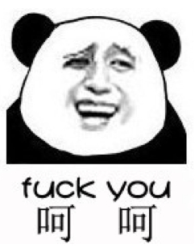 以上只是开个玩笑，其实程序员的门槛不低的。 程序员的门槛低吗？ 其实程序员的门槛也可以说很低。因为这个这个行业对学历的要求不是很高。注重实力而不是学历。如果你说我在中国xx大学取得了xx学位，还真不知道你有多厉害。但是你说我参与了xx项目，代码贡献度在n%以上，解决什么很难攻克的具体的问题，这样才能了解到你的厉害之处。 但实际上程序员的门槛高，十分高，成为一个top1%的程序员的门槛甚至从你出生开始就已经决定了。 而我觉得跨越程序员的门槛关键是智商和努力。 关于这点不想说太多，说太多会戳到很多计算机专业学生的痛处。而对这个问题感兴趣的同学可以看这里 程序员与屌丝相似之处 虽然我觉得普遍群众眼中的程序员和屌丝有很大区别。但是程序员和屌丝还是有交集的。顺便自黑一下，哈哈（逃 1. 很多程序员的家庭背景没有那么耀眼 程序员是一个几乎不靠家庭背景的职业。有实力就是有实力，代码是不会出卖你的。所以程序员的父母是工人，农民之类的职业是正常现象。 2. 程序员的衣着没有那么有个性 程序员的衣着是这样的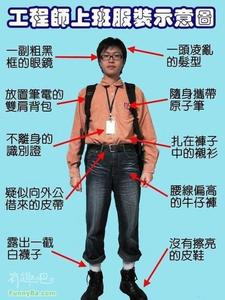 或者是”冲锋衣+牛仔裤+运动鞋”这种奇怪的组合 喜欢穿的鞋子是。。。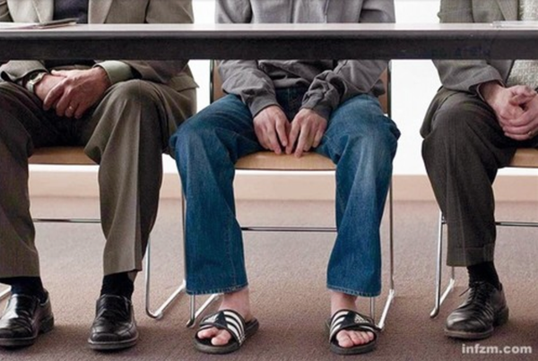 程序媛的衣着是这样的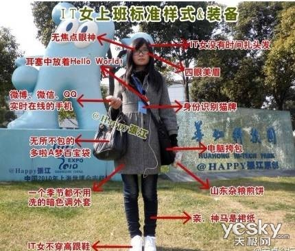 其实都是自黑一下而且，衣着还是要看人的品味如：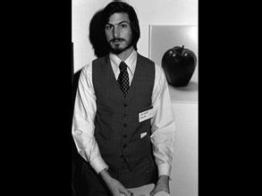 然后就没有了。 ** 3.最悲催的 没有女朋友！其实这才是我写这篇文章的主要目的。程序员才是最理想的丈夫有木有！ 程序员有三好：钱多，话小，死得找。 而且不怕他花心有外遇，有时间除了陪家人就是对着电脑。 程序员有多好！看看真实的情况。本文转自这里 一、找程序员不用担心外遇。程序员是对着电脑工作，周围同事大部分是男生。他的生活中基本接触不到mm，所以不会有办公室恋情的发生，也就不会有外遇问题发生。而且面对的诱惑少，不像销售啊等职位，需要和外人打交道，而且应酬多，所面对的诱惑多，外遇出轨问题容易发生。剪剪常常加班到半夜，我是非常放心的，唯一担心的就是他的身体是否吃得消。 二、程序员很老实。在单位，老板让加班就加班。在家里，老婆说啥都听。mm们，有个老实的老公是不是很不错啊。他可能没你想象的那么浪漫，给你惊喜，但他会老老实实记住你说的每句话，按照你的要求去做。 三、程序员很有耐心。这个理由我不多说了，没有耐心的话，怎么写代码。这个在mm当了妈妈会发现是个很好的优点的。我是个没有耐心的人，教小剪学东西他要是学不会，我会没有耐心发脾气的，但是剪剪很有耐心的，会陪他玩，慢慢教会小剪。 四、程序员很细心。写代码是个细活，不细心就会有bug，真写了bug，还得耐心细心的去找出来。在生活中，对于粗枝大叶的mm来说，有个细心的gg照顾不是很好嘛？反正我们家我是粗枝大叶型，剪剪是细心型。 五、程序员很热心。论坛上兄弟们有困难，他们会出手相助。生活中，朋友有电脑问题，他们会帮助解决。我周围的同事好友要是电脑出问题了，都是剪剪帮忙处理的。 六、程序员是IT高手。可能这么说有点夸张，但是身边有个程序员老公，电脑上很多事不用担心的。早到我以前公开教学要做课件，是剪剪帮我做的。到现在家里要弄弄路由器，或者电脑中病毒了重装系统。再到开心网兰蔻粉领丽人评选，剪剪给了技术上的支持。顺带着，“近剪者赤”，看得多了，我也要变成单位里电脑高手了。很多简单问题也能处理了。 七、程序员单纯。不知道是不是所有程序员是这样，反正我家剪是这样，他对别人不会动什么坏心。对外人没坏心，对你也不会有坏心的。曾经碰到个朋友，老公外遇，要离婚，动了很多坏心，在离婚前还把财产都转移了。朋友离婚，钱没有，房子没有，为了这个男人却付出了青春。 八、程序员加班多。可能这是个缺点，但有时也觉得是个优点。他加班多，你可以有个人空间，做做自己喜欢做的事。我同事觉得我比他们自由多了。这得归功于剪剪加班多。他加班多，你可以拿着他卡去shopping。他没时间花钱，你帮他花。而且大部分的程序员都是很大方的，不会说自己太太什么的。 九、程序员可爱。不知道这个是不是和工作性质有关，我认识的程序员们都很老实的，基本没有滑头的。剪剪最老实的事就是，每次工资还没加，就是听到内部风声，就会先告诉我。每次有机会发了现金，其实不告诉我我是不知道的，他也会老交给我。最最可爱老实的一次，是今年公司年会，他中了4000的现金大奖。马上打电话给我。其实他告诉我是两千，我也不知道的。而且晚上回家后，还非要把我摇醒，让我数钱，说是“数钱数到自然醒”。估计那晚是喝多了。 十、程序员有责任心。没有责任心的程序员，写出来的代码都是问题。当然就是因为有了责任心，想给家人过好幸福的日子。才会拼命加班，努力赚钱。我家剪剪如此，我相信所有的程序员们都是这样的。 遇到一个程序员就嫁给他吧。例如：我（逃） 但估计看到这里应该没有什么妹子吧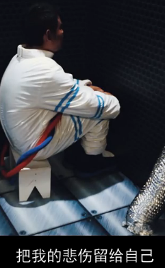 最后 摘抄十分有意思的短文，以勉励自己的前进 Hello world!你是否常常调侃为何会选择这么一个苦命的行当，自嘲在生活的磨难中早已丧失曾经的理想。 每当此时，便想起“入行”第一天“师傅”教的第一堂课：用程序对这个世界说hello —— 全世界的SE都是如此。 看着严肃不苟的老教授在黑板上写下这个近似于卖萌的词语，大家笑了，它没有什么含义，却又包含着无限的意境。 这是一句拥有魔力的咒语~ 在从业后的岁月中，我们经历着种种心劫：困苦、迷茫、膨胀、消极、浮躁、甚至质疑…… 然而，无论处于哪种心境当中，在充满阳光的早晨，心中默念，便总能将脱线情绪带回原点，仿佛变回那个站在金色大门前抬头仰望的孩子，稚气的脸上充满了惊奇、兴奋、渴望与真诚…… “Hello，world！”，告诉我们不要忘记最初的梦想，告诉我们改变世界就先学会与世界相处。 它是程序员职业的“希波克拉底誓词”，永远保持新奇、积极与希望。 加油吧，骚年！！该文转自程序员的理想是什么？